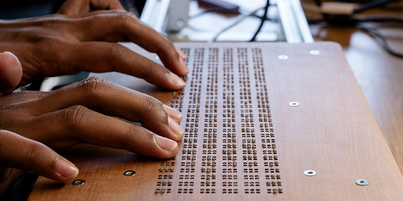

Portfolio
Work Experience
-
Operations Officer
Feb. 2026 - PresentMonash Assistive Technology Team (MATT) Clayton, VIC- Assist in the technical operations of the Monash Assistive Technology Team, supporting delivery of accessibility-focused projects.
- Collaborate with peers to ensure smooth execution of technical initiatives and internal processes.
- Contribute to the effective functioning of the organisation by supporting coordination, communication, and operational workflows.
-
Tactile Display Project Coordinator
Aug. 2025 - PresentMonash Assistive Tech Team (MATT) Clayton, VIC- Lead collaboration with academic supervisor to define project goals and strategies for developing low-cost tactile and refreshable braille displays (MagnePins).
- Guide and coordinate team of project officers in brainstorming and innovation for accessibility technology.
- Conduct user interviews and design surveys to gather insights for user-centered development.
- Lead development of React Native mobile application to support the Tactile Display project.
- Received 90%+ positive reviews from team members for effective leadership and communication.
-
Tactile Display Project Officer
Mar. 2025 - Aug. 2025Monash Assistive Tech Team (MATT) Clayton, VIC- Collaborated with academic supervisor and fellow officers to brainstorm accessibility solutions.
- Assisted in design, development, and testing of tactile display components for blind and low-vision users.
-
Private Mathematics Tutor
Nov. 2024 - March 2025Self-Employed Wantirna South, VIC- Delivered customized Year 7-10 mathematics lessons, adapting content to individual student learning styles.
- Managed scheduling and planning of tutoring sessions, strengthening my skills in leadership, time management, and communication.
- Provided ongoing academic support, fostering student confidence and helping them achieve their personal learning goals.
Projects

Tactile Display Project
React Native
Hardware
- Contributed to open-source project developing low-cost refreshable braille displays.
- Developed React Native application to interact with Tactile Display.
- Utilised Figma to develop mock prototypes to create an accessible website.

Braille Character Quiz Game
React
TypeScript
RxJS
- Developed an interactive web-based game for learning and practicing Braille characters at pjrus.github.io/braille-quiz-game.
- Implemented real-time feedback, scoring system, and streak tracking utilizing RxJS for reactive state management.
- Designed a modern, responsive, and accessible interface with timed challenges and custom animations.
Pomodoro Timer App
React Native
Expo
TypeScript
- Developed full-featured iOS productivity app with unique liquid animation timer.
- Integrated glassmorphism UI design, ambient sound playback, and haptic feedback.
- Designed modular component architecture with file-based routing and persistent storage.

Personal Portfolio Website
Web Dev
VPS
- Developed and maintain portfolio website at www.p-jain.dev.
- Deployed on Virtual Private Server (VPS) with custom domain configuration.
Appointment Booking System
Next.js
React
TypeScript
MongoDB
Tailwind CSS
- Modern rewrite of my VCE Software Development Project, migrated from PHP/MySQL to a Next.js and MongoDB stack.
- Implements full CRUD operations with server-side validation and double-booking conflict prevention.
- Features an admin dashboard for managing appointments, doctor profiles, and clinic settings.
- Includes automated .ics calendar file generation for client bookings.
Certifications
- Deloitte Australia Technology Job Simulation (2025)
- Google's Technical Support Fundamentals Certification (Grade: 98.35%)
- FreeCodeCamp's Responsive Web Design Certification